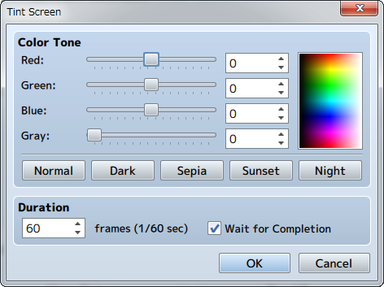
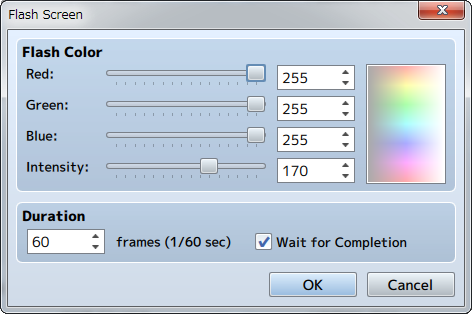
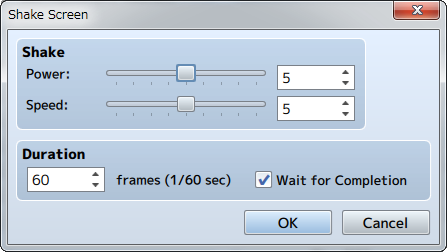

Screen
Fadeout Screen
Function
Fades out the screen (slowly fades the screen into black). There are no parameters to set.
Remarks
- The screen will remain faded out until the [Fadein Screen] event command is run.
- Elements such as the menu, message windows and battle command window will still be visible even while faded out.
- If run during a battle event, everything except the command window and messages will appear black, and enemies, etc. will not be visible.
Fadein Screen
Function
Returns the screen back to normal after using [Fadeout Screen]. There are no parameters to set.
Tint Screen

Function
Changes the color tone of the entire screen. The color tone of pictures and message windows will not change.
Settings
- Color Tone
- Specify the amount of each [Red], [Green] and [Blue] to add (-255 to 255). Set the strength of the gray scale filter (0 to 255) by changing the [Gray] value. The higher the value, the stronger the overall color tone will be. By clicking the [Normal], [Dark], [Sepia], [Sunset] and [Night] buttons below, values representing each color tone will be applied ([Normal] will return the color tone back to its original setting). Check the color tone using the preview area on the right.
- Duration
- Specify the amount of time changing the tint of the picture will take in number of frames (1 to 999). 1 frame is equal to 1/60th of a second.
- Wait for Completion
- When enabled, processing will wait for this event command to finish.
Remarks
- This color tone will remain in effect, including during battle, until using this event command is used again to change the settings.
Flash Screen

Function
Causes the entire screen to change to the specified color for just an instant, and will slowly return back to normal. You can use this to express things like lightning.
Settings
- Flash Color
- Specify the color to display based on each of the [Red], [Green] and [Blue] component values (0 to 255). The specified color can be checked in the preview area on the right. [Intensity] sets the opacity (0 to 255) of the color. Putting this to 0 will cause it to be completely transparent, and will not affect what appears on the screen.
- Duration
- Specify the amount of time the flash will last in number of frames (1 to 999). 1 frame is equal to 1/60th of a second.
- Wait for Completion
- When enabled, processing will wait for this event command to finish.
Shake Screen

Function
Shakes the entire screen left to right.
Settings
- Shake
- Set the size (1 to 9) of the shaking range using the [Power] parameter, and the speed (1 to 9) of the shaking using the [Speed] parameter.
- Duration
- Specify the amount of time the shaking will last in number of frames (1 to 999). 1 frame is equal to 1/60th of a second.
- Wait for Completion
- When enabled, processing will wait for this event command to finish.
Set Weather Effect

Function
Controls the display of effects which represent weather (rain/storm/snow).
Settings
- Type
- Specify the type of image to display. Set to [None] to stop displaying an image.
- Power
- Specify the amount of images to display (1 to 9).
- Duration
- Specify the amount of time changing the weather will take in number of frames (1 to 999). 1 frame is equal to 1/60th of a second.
- Wait for Completion
- When enabled, processing will wait for this event command to finish.
Remarks
- This cannot be used in battle events.